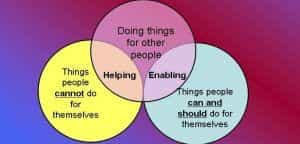

Over the years I’ve known a few friends (and, sadly, family) who at some point I began to see in a different light—these were men very close to me who eventually revealed themselves to always make bad decisions, avoid personal change and self improvement, fail with women (or get with terribly low-tier ones), and periodically need my help to get themselves out of a hole they had dug for themselves.
At the very least it was slightly annoying, but after bailing them out numerous times I become angry and frustrated with the lack of personal responsibility. I came to understand that these are broken men.
What I now call the “loser mentality” is not reserved for extreme cases like drug addicts, felons, and so forth. Sometimes otherwise nice, decent people are actually living a “loser” life; not everyone is necessarily “bad” but sadly are still a net negative and will drain us of money, motivation, time, and more if we don’t make the hard choice to walk away from them.
There appear to be common traits among these types which serve as telling indicators of those who your good intentions are wasted on. Allow me to present several here.
1. Their Lives Often Start With Paths That Are Difficult To Recover From

Sometimes your choices are costly in the long run. Even more costly is never trying to move ahead and escape.
One of my closest friends married young and had several children with a woman despite being in a low income bracket at the time, and still works up to two low-paying part time jobs, spending his best years struggling instead of advancing & growing. My brother, to my dismay, had several children by several different women. Another friend of mine became somewhat of an alcoholic and dropped out of the community college we were attending many years ago, despite my encouragement in staying.
In all cases, the theme was the same: these mistakes, along with a failure to pursue the opportunity for a better life (and the possibility of recovering one day) cemented their fate: a life of having to rely on others, never being able to “dig out of the hole” financially, and never enjoying the things in life that the rest of us do.
Reflecting on this common theme I see the same in others: their lives often started down a very hard road, and yet they never seem willing to make the short-term sacrifices (despite opportunities to do so) that would ensure long-term improvement and allow them to break out before it’s too late
2. They Make the Same Mistakes Over and Over

It’s often pointless to discuss the obvious with those who live as “losers.” I understand, very humbly, that we all make poor decisions from time to time; what is critical is whether we learn and grow from this or foolishly disregard the consequences again and repeat our stupid decisions.
My own version of Einstein’s statement regarding insanity is this: “Doing the same thing again and again and expecting different results is the definition of stupidity.” Those with the loser mentality will quit jobs for trivial reasons, give up free education, wreck their vehicles (and lose them), get arrested over and over, and impregnate women again and again. And yet seem very passive about the consequences and how far away from happiness and success they place themselves. It’s amazing, and infuriating, to see.
3. They Accept Money And Pity But Never Solid Advice

Some people seem to always be this away. As if it were simply bad luck.
This is one of single greatest truths regarding these types that I’ve ever learned. Every time these people came back to me, there was always some urgent emergency and they needed money badly. I helped how I could, and was supportive of course with kind words and enthusiasm, but I came to see something happen every time.
I spent much time sharing personal advice about how to improve their lives and yet, not once was any of my advice taken. NEVER.
Funny, all the Facebook comments and prayers and positive comments and sympathy seem to be welcome and responded to, but never anything truly meaningful is done about it. Honest, intelligent, and sincere advice is a waste of time on those with the loser mentality. Save it for men who deserve it. I’ll never make that mistake again.
4. They Don’t Really Want To Change

This is what it pretty much amounts to. So much for your great & insightful advice
From #3 above, there’s a general underlying problem: men who live a sad, low-tier life often do so by choice. We have more opportunity in the West than many areas of the world. And yet, so many seem content to live miserable lives, severely restricted from what is right in front of them and all the possibilities that exist. How is this possible?
There is an underlying lack of a desire to change. Seeing some of my best friends constantly move backwards in life began to show how they avoided seizing the opportunities that others, and fate, provided them. Given an opportunity to move to a better location? Set up with a job interview at a better place? Encouraged to apply for a grant and attend a trade school? Dress better, get in shape? NO.
When you’re a loser, and think as a loser does, you always have some excuse or “reason” to avoid anything that requires stepping outside your comfort zone or moving forward. They don’t want to change, and that’s that!
5. They Place The Blame Elsewhere

Life does hold random fate. However, a wise man betters his odds, not blame them for failure.
It never fails, and unfortunately I’ve had to witness a family member doing this: rarely, if at all, admitting, “Yeah, I messed up.”
Conveniently blaming bad luck, bad timing, or just being completely oblivious to the consequences of poor choices is a trait you’ll find repeatedly with these types. I’ve even heard “The man is trying to keep me down.”
6. They Often Need To Be Bailed Out Of Bad Situations
One of the most significant characteristics of a loser is their need to be bailed out of bad situations, often in a very sudden manner.
Their lack of foresight and low income means they rarely have any emergency funds to withdraw from a bank, and then you’re left with the chore of sending them money via Moneygram or something similar for whatever situation they’ve found themselves in. More often than not their problem is due to poor planning or not living within their means. You’re extremely fortunate if they repay you, which is another topic unto itself. Other times they’re in jail again and need to be bailed out when no one else is willing to do so any longer.
I recall helping one of my friends years ago in his “emergency situation” when he claimed to desperately need cash for gas to travel to work and buy food. I urgently rushed to send the money via Western Union. Do you think I was ever repaid? Could I ever ask the same from him? I think you already know the answers.
7. They’re Slightly Dysfunctional – Behavior That At Times Is Awkward or Irrational
Odd behavior = clues to problems.
A pivotal moment when my eyes became open was when I once suggested to one friend that perhaps rather than working 2 poorly paying part-time jobs he could start with a decent full-time job, enjoy more free time, and then later move to an even better/higher-paying full time job. His quality of life at the time was very low, working above-average hours per week at a trivial pay rate.
Similarly, with a family member and also a friend with a below-average life I suggested going to school part-time for a skilled trade or an Associate’s Degree, which would open doors fairly easily to greatly improve their income and give them the opportunity to live in better places where their skills would be in demand.
In all cases I was met by awkward, bizzare silence and even a strange behavior in which they seemed to act as if I hadn’t said a word. And at times their behavior in social situations showed they are not well-equipped to interact with others as expected of men their (adult) age. It’s a very odd thing to see.
When you innately have problems and live in a world where you retreat into your shell like a turtle, you are living a dysfunctional and counter-productive life.
Witnessing one talk about women (some of which were productive, attractive, respectful) as if they even had a remote shot a such a woman showed me they had a skewed outlook and were unrealistic in their perception at times. They have almost nothing, and yet at times have the desire to have women who are attracted to men who are more successful.
8. Their Choices Are Often Enabled by Others

After witnessing many situations both different and similar to those I’m recalling here, another pattern emerges: Losers continually rely on the help of others, always anticipating that someone will bail them out, thereby enabling their behavior time and time again.
Sadly, it’s both distressing to be called upon to help someone you once respected, knowing full well this is a result of their poor decisions yet again, and the stress and annoyance of it is a drag on you internally.
The difference is that we must understand that men with the loser mentality subconciously expect someone to bail them out every time. It becomes learned behavior…they’re never forced to struggle and resort to find a solution themselves.
Despite your best intentions, continually bailing out losers won’t help them in the long run – they’ll just get by until it happens again the next time. It’s time to say “no.”
9. They Live Day-to-Day, And Don’t Think About the Long-Term

When a relative of mine died almost 10 years ago, I received a small amount of money. I reflected back on how my father had little to no money during his retirement age years and had little to get by on. I decided to make the right decision and start a retirement account back then, which now is considerably larger.
I watched time and time again as my old friends and acquaintances would come into large tax refunds, a bit of interitance, or so forth. Inevitably, the money would be gone very quickly, often into a car or petty things, rather than planning for the future and being concerned about how they’d get by later.
It never fails: those who live paycheck-to-paycheck never truly live below their means (in which case they could begin to get ahead) or give serious thought to how they’ll survive emergencies.
10. If You Ever Need Their Help, Prepare to Be Disappointed
I’ll never forget how it felt to need help in an emergency from someone I loaned money to multiple times in the past, along with many other forms of help, only to be denied. It was an extremely angering feeling in the middle of a stressful situation.
On a trip a few years ago to a latin country, I later discovered that my debit card became lost or stolen between Miami and a rural area overseas (we traveled from the capital to her parent’s 2nd home). It was an emergency situation as I had very limited cash and no means to access my bank account overseas (although I should have prepared better). I was stressed, in a difficult situation, and it was a rare time I really needed someone’s help.
I called back to the USA to someone in my family and told them how I needed maybe $300 or $400, etc. to hold me over until I returned. What did you think I heard? “Ain’t got no money, man.” And the same from his wife at the time “Naw, ain’t got no money.” Not, “I don’t have the money, but I can get it here or from so-and-so”, or “Let me ask xxx if they could help me out”, or even “Don’t worry I’ll get an emergency loan to get you by.” After so many times I helped this was my reward: nothing.
By the grace of God, my father who was living off of social security, was able to send me a bit of money until I got home.
Never expect help when you really need it from those who have the loser mentality. These broke-ass losers are living day-to-day worrying about themselves and losers cannot be counted on. Ever.
In Conclusion
Of all my regrets in life, one of my greatest was all the money I lost and the naive, foolish concern and effort I wasted on those who honestly have little to show for their lives. It was particularly sad because these were often guys I once enjoyed the company of and was close to, and had good memories with. As time went on I saw their lives turn into sad melodramas and I realized they are a drain on our resources and motivation.
Being burned the one time in my life that I really needed help from one was an especially unforgettable lesson.
I no longer foolishly give time, money, or advice to those I know who I recognize as being of the “loser mentality”: going nowhere in life, disregarding advice, and never trying to better themselves.
Take my advice: Learn to separate losers from men who genuinely deserve your resources and concern. Walk away from those who have the characteristics I shared here and would affect your life negatively.